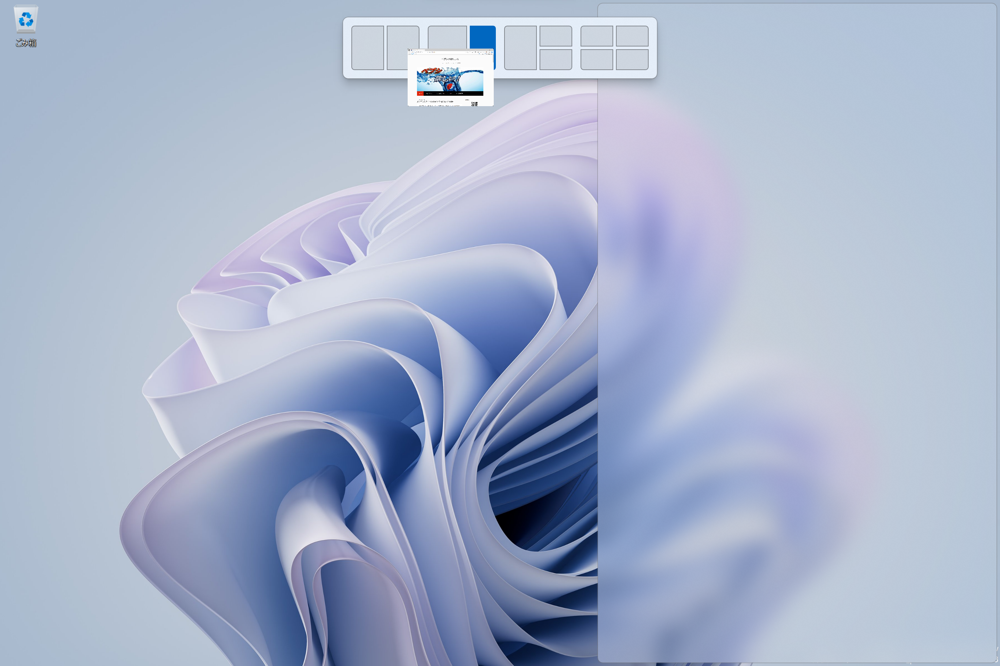
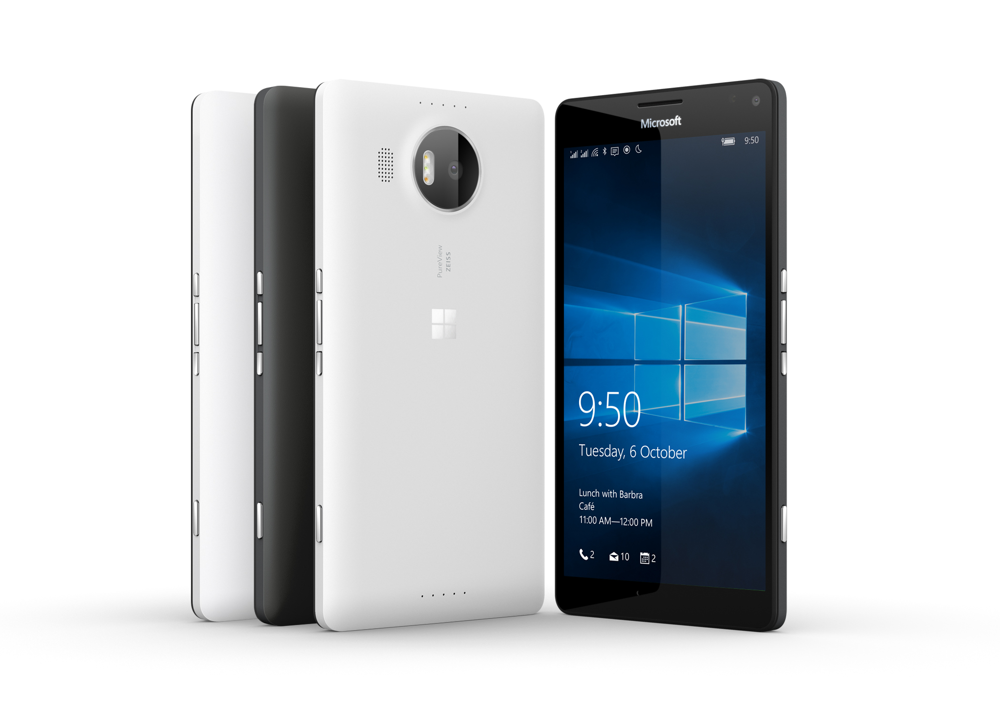
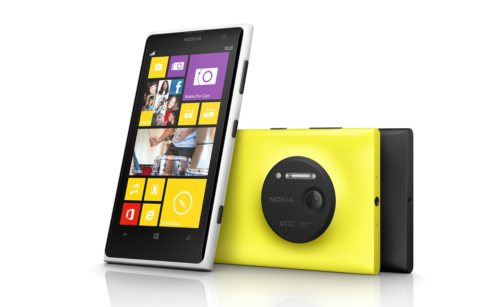
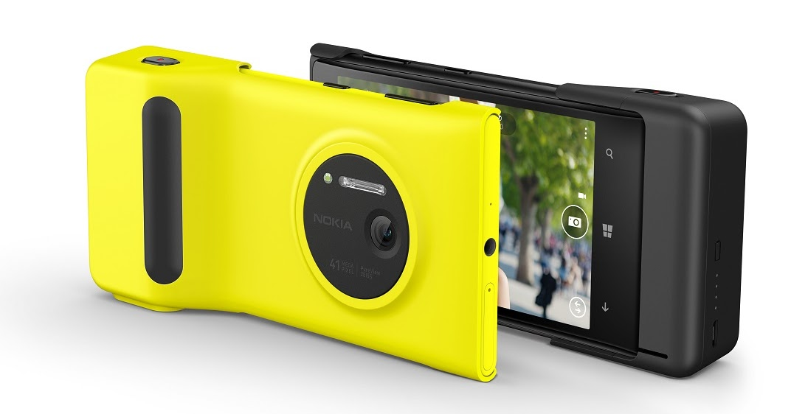

Surface Pro9 with 5Gでゴリ押すスマホ無し生活

私のバカバカバカバカ！！！ 結局スマホが必要になるじゃない！！！
みなさんこんにちは！ 元素さんです！
そろそろスマートフォンの買い替え。今回はこんなものを購入しました。

Microsoft Surface Pro 9 with 5Gです！ いやスマホじゃないじゃん！って思われるかもしれないんですけど、すみません欲しかったので。というわけで今回は、Surfaceを活用すればスマホ無しでどこまで耐えられるか挑戦します。いくぞー！ヽ(✿ﾟ▽ﾟ)ノ
目次
- どうしてスマホじゃなくてSurfaceを買ったの？
- そんなCPUで大丈夫か？
- いつでもどこでもSurface
- Windows Subsystem for Android
- WSAにできること、できないこと
- ARMプロセッサ本領発揮
- WSAとメモリ
- やっぱりスマホは捨てられない
- スマホと上手く距離を保つ
- スマホとの共生
- Surfaceのオトモに欲しいスマホ
- あとがき
どうしてスマホじゃなくてSurfaceを買ったの？
スマホだけでなくラップトップPCも買う必要があったんですよね。少し前にラップトップPCが壊滅的に壊れたんですけど、やっぱり出先でPCが使えないのはとっても不便でした。しかしスマホとラップトップPCの両方を同時に買い替える予算はありません。二兎を追う者は一兎をも得ず。さすればどちらを追うか決めなければなりません。今回は魅力的だと感じるスマホが見つからなかったので悩みました。悩んだ末に「モバイルデータ通信が使えるWindowsタブレットがあればスマホは要らないんじゃない？」と思い始めました。
スマホは様々な事が出来て便利ですが、「出来るけど快適ではない」タスクが多いです。
そのため基本的にスマホの使用は必要最低限にとどめ、PCでできることはなるべくPCで行うのが私のスタイル。出先でもPCでインターネットが使えれば、それがスマホである必要は無いと考えました。
そんなCPUで大丈夫か？
ガジェット大好きな読者の方は「早くスペックを教えろ」と思われる事でしょう。私もそう思います。気になるスペックはこちら。| 5Gモデル | Wi-Fiモデル | |
|---|---|---|
| CPU | Microsoft SQ3 | 第12世代 Intel Core i5 または i7 |
| メモリ | 8GB(LPDDR4x) | 8～32GB(LPDDR5) |
| SSD | 256GB | 128GB～1TB |
| ディスプレイ | 13インチ 2880 X 1920 最大 120Hz | 13インチ 2880 X 1920 最大 120Hz Dolby Vision IQ対応 |
| OS | ARM版 Windows11 Home | Windows 11 Home |
| 端子 | USB-C 3.2 ×2 Surface Connect タイプカバー端子 nano SIMスロット |
USB-C 4.0/Thunderbolt4 ×2 Surface Connect タイプカバー端子 |
| 寸法 | 287 × 209 × 9.3 mm | 287 × 209 × 9.3 mm |
| 重量 | 878g | 879g |
| バッテリー持続時間 | 公称19時間 | 公称15時間 |
まずMicrosoft SQ3という耳慣れない名前のCPUが特徴的ですね。これはMicrosoftとQualcommが共同開発したプロセッサで、Snapdragon 8cx Gen3をベースとしています。Snapdragonはスマートフォンによく搭載されるARMプロセッサです。要するにPCなのにスマホ寄りのCPUが搭載されているという事です。
スマホ寄りと聞くと心配になるのが処理性能。思わず「そんなCPUで大丈夫か？」と聞きたくなりますね。ARMアーキテクチャに最適化されたアプリを動かす分には、問題ないどころかかなり軽快に動作してくれます。
しかしWindows PCではまだ一般的ではないARMアーキテクチャでは使用できないアプリが少なくないです。Windows11 on ARMには、PCでは一般的なx86とx64アーキテクチャのエミュレータが実装され、対応アプリの範囲は広がりました。しかしApple MusicやAdobe Premiere ProなどARM搭載PCにはインストールできないアプリがあります。
それでもARMプロセッサ搭載PCが存在するのには理由があります。消費電力です。公称ではありますが、19時間というWindowsタブレットでは長めの稼働時間を実現しています。これなら出先で使うのにも希望が持てますね。
いつでもどこでもSurface
Surface Pro 9 with 5Gがスマホを置き換えられるかという本題はさておき、本機を導入してから生活の快適性が劇的に向上しました。それには複数の要因があるので、個別に紹介します。軽いPCは持ち運びしやすい
以前使っていたSurface Book 2は1.9kgもある重量級。それに比べてSurface Pro 9 with 5Gは878gという軽さ。私が1kg未満のPCを使うのは初めてですが、鞄の総重量が明らかに軽くなり、肩凝りが改善しました。私はその時必要十分な量になるよう荷物の内訳を調整しますが、Surface Pro 9は薄くて軽いので高頻度で鞄に入れています。
大きいことはいいことだ
可搬性を無視すれば、画面は大きければ大きい方が快適です。出先で何かデバイスを使う場面において、スマホと比べたら随分大きい13インチは便利です。タッチキーボードが打ちやすいですし、後述する画面分割にも活きます。
画面分割しやすい
モバイル端末はPCと比べてマルチタスクに向かないという弱点があります。スマホで調べ物をする時、ブラウザとメモ帳を行ったり来たりするのは非効率的ですよね。画面分割して複数のアプリを同時使用したいです。最近はAndroidスマホやiPadでも画面分割は可能ですが、元々画面が小さく、また分割の手順も直感的ではないのであまり使いません。

Windows11では、ウィンドウを画面上部に動かすと画面分割の候補が表示されます。分割の候補にウィンドウを持っていくだけで簡単に画面分割できます。また、Surface Pro 9の画面サイズ13インチなら2分割しても小型タブレット並みの画面サイズがあります。一般的なモバイル端末よりはマルチタスクが得意と言えます。
タブレット向けのWindows11の改善
Surface Book 2はラップトップPCですが、画面部を分離してタブレットとして使えます。しかしあまりタブレットとしては利用しませんでした。当時のWindowsはタブレットでは使いにくかったのです。スタートメニューを開くにはタスクバー左下のWindowsロゴをタップでした。使わないときはタスクバーを非表示にする私の場合は「タスクバーを出す→Windowsロゴをタップ」という2段階の動作が必要になります。
現在Windows11ではタスクバーの表示非表示に関わらず、画面下端からスワイプすることでスタートメニューが開きます。Windows11は他にもタブレット向けの改善が段階的に追加されているので期待できます。
Windows PCでモバイルデータ通信が使える
出先でPCを使う場面はめったにありませんが、全く無いとは言い切れません。そういういざという時に逐一テザリングを繋ぐのは手間です。ロック解除してすぐインターネットが使えるのは快適性が違います。
サブ回線の導入
スマホとSurfaceそれぞれにSIMが必要なので、サブ回線を契約しました。まずは使用量や使用頻度を見積もるためにpovo2.0を契約し、5GB（30日）のデータ通信量を買いました。1GB/月しか使えないスマホで毎日データを節約するストレスから解放されたので、気が楽になりました。そもそも日常生活の大半はWi-Fi環境がある場所にいるので莫大なデータ通信量は必要ありませんが、通信量の余裕は心の余裕です。
電源付けっぱなし
私は普段PCをこまめにシャットダウンしますが、Surface Pro 9 with 5Gは電池持ちがとてもいいので基本的にシャットダウンしません。使わない時はスリープさせ、電源ボタンを押したら即座に使えるという状況にしています。使い始めがスピーディだと、スマホのような手軽さで使っちゃいますね。
ここまでのまとめ
Surface Pro 9 with 5Gは普通にタブレット端末として使い勝手が良いです。軽いため持ち運ぶ頻度が上がり、いつでもどこでも大活躍なのでスマホの利用頻度が大きく減じました。スマホの窮屈な画面サイズや操作性によるストレスから解放され気分が良くなりました。
Windows Subsystem for Android
Windows11にはWindows Subsystem for Android（以下WSA）という仮想化技術があります。その名の通りWindows上でAndroidアプリを利用できます。よくあるエミュレータとは異なり、個々のAndroidアプリが別個のウィンドウで開くため画面上に複数のアプリを並べることも可能です。現在WSAにはAndroidでお馴染みのPlay Storeは無く、Amazonアプリストアしかありません。ラインナップが乏しくあまり実用的とは言えません。しかし非公式にPlay Storeを入れる方法があります。そうした手段を使うか、あるいは公式にアプリのラインナップが増えるまで待てば、PCで出来ることがもっと増えてスマホが要らなくなるでしょう。
WSAにできること、できないこと
WSAでどこまでスマホの出番をカバーできるのか気になったので、WSAが持つ機能を調べてみました。文字入力
文字入力はWindows向けのアプリケーションと変わりません。Android側ではなくWindows側のIMEを使用するため、IMEで設定したキーマップもそのまま反映されます。使用感が変わらないのはいいですね。
インターネット接続
WSA上でAndroidの設定画面を開くと、「VirtualWiFi」という名のWi-Fiアクセスポイントに繋がっていると表示されています。その名の通り、仮想的なアクセスポイントをWindows側で用意しているのでしょう。これはWindows PC自体をWi-Fiに繋いでも、有線LANに繋いでも変わりません。
モバイルデータ通信
他のインターネット接続方法と変わらず仮想的なアクセスポイントに繋がっていますが、従量課金制接続であることや、キャリアがどこかは認識しているようです。
対応している音声フォーマット
WindowsはDolby Atmosなどマルチチャンネル音声に対応しているので、WSAからも出せたらいいなぁと思っていましたがダメでした。そもそも既存のAndroid端末の外部音声出力がマルチチャンネル音声に対応していないので期待した方が負けですね。素のAndroidと同様、マルチチャンネル音声のデコーダが実装されていないようです。つまりWSAはステレオまでしか扱えません。今後のアプデでDolby Atmosに対応してほしいです。
音声出力
Androidアプリ側からは、端末の内蔵ステレオスピーカーとして認識しているようです。Windows PCで使用している音響機器がスピーカーだろうとヘッドホンだろうと変わらないので、VirtualWiFiと同様仮想的な音声出力先なのでしょう。複数のアプリを起動しても、Windowsの音量ミキサーでは「Windows Subsystem for Android」という名前で一緒くたに扱われ、個別に音量を調節することはできません。
Bluetooth
なんとWSA側ではBluetoothが強制的にOFFになったまま利用できません。Meta Questの初期設定やスマートウォッチのようにスマホと外部機器をBluetooth接続する事例で詰みます。
WSAまとめ
従量課金制接続を認識する事や、文字入力でWindows側のIMEを利用することは優秀だと思いました。逆にBluetoothが使えない事は致命的ですね。個人的には音声周りが改善されたら泣いて喜びます。
ARMプロセッサ本領発揮
WSAにおいては、x64アーキテクチャよりもARMアーキテクチャのCPUの方が安定して動作します。また動作時のCPU使用率が低く、発熱も劇的に違います。スマホ畑のCPUを搭載したPCはスマホの真似事が上手いのです。比較対象として第12世代Core i5搭載のPCを借り、メモリ8GBと16GBの場合でWSAの動作確認をしました。Surface Pro 9 with 5Gと同じメモリ8GBの場合は安定性に劇的な差がありました。Core i5 メモリ8GBではWSAは使えたものではありません。Core i5 メモリ16GBの場合はひどい発熱はあれど全体的に安定していましたが、一部の高負荷なアプリではSurface Pro 9 with 5Gの方が動作が良好でした。
普通のPCでもメモリが多ければWSAを扱えそうですが、いずれにせよARMプロセッサの方が安定します。餅は餅屋ですね。
WSAとメモリ
WSAはメモリ使用量がとてもとても多いです。メモリ16GB未満の場合は最大で4GB使用します。Surface Pro 9 with 5Gの場合、最大でメモリの半分が使われる事になります。時々メモリ不足によるハードフォールトが発生し、音声出力が詰まったりノイズが生じたりします。メモリ16GBでもメモリ使用率は90％台で高止まりします。PCのメモリが16GB以上ある場合、WSAは最大で6.3GBもメモリを使用します。しかし大抵のアプリは6.3GBも使わないので、ハードフォールトは滅多に発生しません。
ここまでの話を総合すると、WSAを使うなら買うべきは一般向けではなく法人向けのSurface Pro 9 with 5G（SQ3/メモリ16GB/SSD256GB）だと思います。実は当初は法人向けのを買うつもりでした。でも出費を気にして一般向けにしてしまいました。
やっぱりスマホは捨てられない
予想通りではありますが、Surface Pro 9 with 5GにSIMを挿しても音声通話はできません。音声通話は滅多に使いませんが、無いと困る生活必需品です。もう一つ致命的なのが通知周り。Windows11はスリープ中に通知音が鳴りません。通知音を鳴らしてくれるデバイスが必要です。最初はWSAとスマートウォッチを組み合わせて何とかならないかと思いましたが、先述の通りBluetoothが使えないので無理です。
そんなこんなで通話と通知とBluetoothのためにスマートフォンを手放すことができませんでした。無念。
スマホと上手く距離を保つ
通知が気になってついスマホを見てしまうこと、多々ありますよね。スマホを持たない生活は無理でも、スマホを見る頻度を減らすことはできます。WindowsにリンクというAndroidアプリを使用することで、スマホの通知をWindows PCに転送する事ができます。PCを使っている間はスマホをチェックしなくて済みます。さらに、このアプリを使えばWindows PC側からスマホを経由して音声通話やSMSの送受信をすることも可能です。2段階認証でSMSを受信する事が多い昨今、その都度スマホを取り出さなくて済むのは助かります。
スマホは確かに持っているんですけど、その存在を気にしないくらいには使用頻度が下がりました。スマホを気にしないだけでストレスが減った気がします。デメリットはスマホを見ないので電池切れに気づきにくい事です。
スマホとの共生
ここで再びARMアーキテクチャの話に戻ります。少し前にも触れましたが、Windows11 on ARMにはx86とx64のエミュレータがあり、対応していればARM用のアプリでなくても利用できます。x64アプリは特に問題なく動作してくれます。問題はx86アプリ。起動が遅かったり負荷が大きかったりします。特にDiscordはARM搭載PCでは電力消費が莫大で、ARMの利点である電池持ちを台無しにしてしまいます。
私はDiscordを業務連絡に用いているので、常に通知を受け取りたいです。しかしバックグラウンドでDiscordを起動すると電池持ちが犠牲になります。そこでスマホの出番です。スマホからWindowsにリンクでDiscordの通知を転送するようにします。これでPCを使用している間も通知を受け取れます。そしてSurface側ではDiscordをバックグラウンドでは動作しない設定にし、必要時だけ起動します。これで電池持ちは劇的に改善されました。
Surface Pro 9 with 5Gを主役としつつ、その足りないところを補うオトモとしてスマホを使うのが私の新たなスタイルとして確立しました。
Surfaceのオトモに欲しいスマホ
フォロワさんならご存知の通り、私はこれまで一風変わった端末を好んで使ってきました。いつも使う道具にはこだわりたいじゃないですか。しかしSurface Pro 9 with 5Gを導入してから、日に3回くらいしかスマホを見なくなりました。1日中スマホに触れない日もあります。使わないものに個性があっても、それを活かす場面がありません。
Surfaceを買うだけで手いっぱいだったので、スマホの買い替えはこだわりを捨て可能な限り切り詰めました。知人から不用品処分で押し付けられた二束三文で譲っていただいたMoto g50 5Gを使用しています。バッテリー容量が大きいくらいで、これといった特徴が無い格安スマホです。Moto g50 5Gを使って（と言っても初期設定だけしたら後はほとんど放置していますが）私が今スマホに求める要素がハッキリしてきました。
OS
「Windowsにリンク」がAndroidにしか対応していない以上、OSはAndroidで無ければなりません。アプリの対応状況を考慮するとAndroidのバージョンは11以降でなるべく新しい方が望ましいです。
電池持ち
スマホを見る頻度が低すぎて、気づいたら電池切れ寸前という状況が多々あります。電池は大いに越したことはありません。Moto g50 5Gは5000mAhあるので電池持ちは良好です。
サイズ
Moto g50 5Gの不満点として本体サイズが挙げられます。縦が長すぎます。前の端末に合わせたサイズで作ってもらったポーチがあるんですけど、Moto g50 5Gだと長すぎて入りません。スマホにしては大きい画面は、タブレット端末と併用する場合お荷物になってしまいます。コンパクトであって欲しいんですけど、そうするとバッテリーサイズとトレードオフなので悩ましいですね。
カメラ

数年前にLumia950XLというスマホを使っていました。カメラの色味や解像感が極めて良く、未だに私の持っているスマホでは最高です。今でもいい写真を撮りたい時に使っています（今回の記事の写真もLumia950XLで撮っています）。しかし発売から7年以上経ったスマホなので、いつ壊れるかわかりません。Lumia950XLより美しい写真を撮れるスマホがあるなら教えてください。
Dolby Atmos対応
Apple Musicに加入しているので、Dolby Atmos対応楽曲を再生できると嬉しいです。と言ってもイヤホンやヘッドホンを用いた仮想的な再生は個人差が大きく、私はそこまで効果を感じないので無いよりはマシといった程度の重要度です。
今、こんなスマホがほしい
まず第一に実現してほしいのはバッテリー持ち。次にサイズが過剰に大きすぎない事です。これだけで及第点です。
さらに綺麗に写るカメラがあれば完璧です。バッテリー持ちが良く、それでいて大きすぎず、カメラが良い端末…ある端末を思い浮かべました。

Lumia1020です。当時としては破格の4100万画素のカメラを搭載したスマホです。随分前のスマホなので今のスマホほど大きくありません。

さらに純正の周辺機器として、外付けのカメラグリップがありました。厚みがあって横持ちしやすいだけでなく、グリップ内に追加のバッテリーを内蔵しています。つまりカメラと大容量バッテリーが揃った端末と言えます。今こそLumia1020のような端末の【令和最新版】が必要だと思います。
あとがき

Surface Pro 9 with 5GはタブレットPCとして使い勝手が良く、導入してから快適性が劇的に向上しました。残念ながらスマホを完全に持たない生活は実現できませんでしたが、「Windowsにリンク」のお陰でスマホをほとんど使わない生活は実現できます。Windows Subsystem for Androidも通常利用ではアプリのラインナップが乏しいですが、今後の展開によっては可能性があると感じています。
今回は「スマホを置き換えられるか」に注力した話でしたが、普通にWindows PCとして使ったレビューも書きたいなと思っています。
やむを得ず選んだはずなのに、予想外の大当たりでした。新たなメイン機としてフル活用していきます！